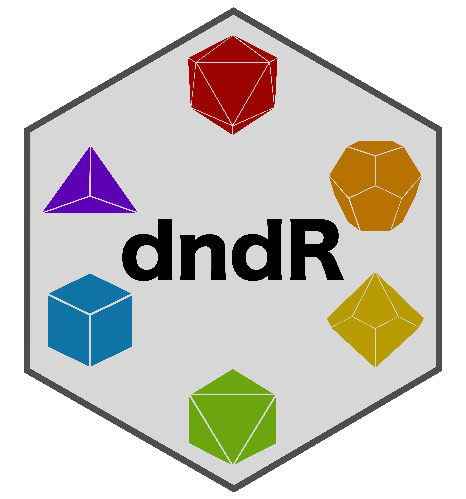
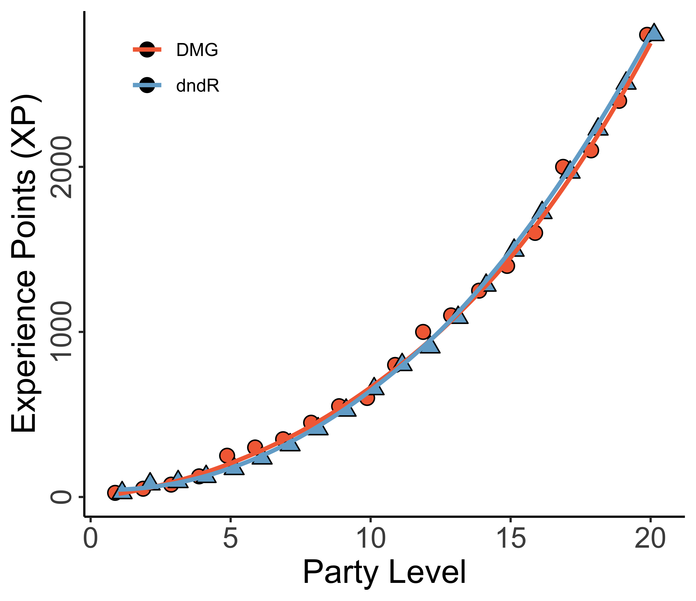
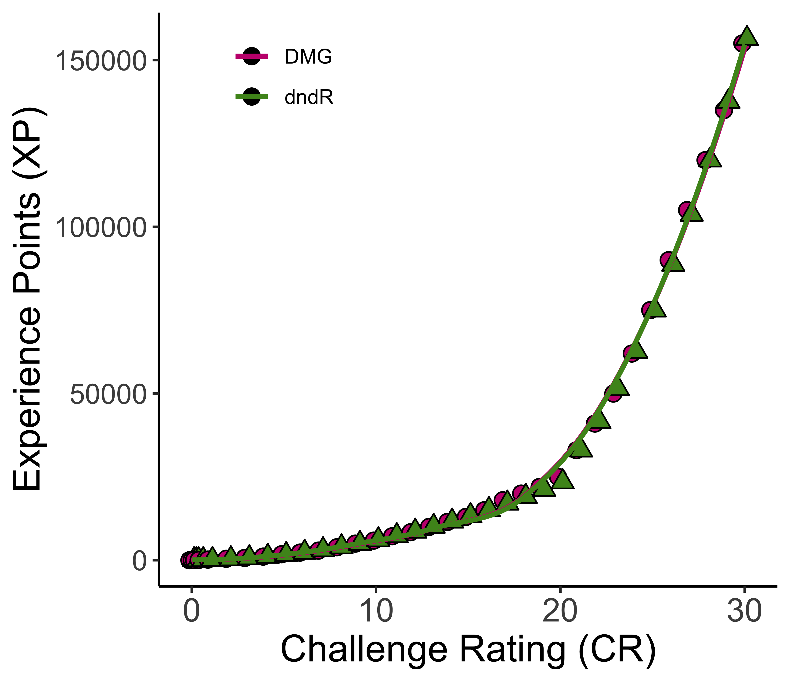

dndR_Vignette

Welcome to dndR!
I am a big fan of both R and Dungeons and Dragons so I thought it would be a fun test of my coding skills to build an R package that supports this hobby! dndR includes several functions that can be broadly divided between functions for both players and dungeon masters (DMs) and functions that are intended primarily for DMs.
If any of these functions break for you, please post an Issue and I’ll tweak the code ASAP. I hope that you enjoy the rest of this vignette as it demonstrates some of the use-cases for the functions currently included in dndR!
Begin by ensuring that you have the development version of dndR installed.
# devtools::install_github("njlyon0/dndR")
library(dndR)Dice Rolling
At its simplest, DnD involves significant amounts of dice rolling and (often) summing their values, so dndR includes a roll function! This function supports ‘rolling’ up to 10 million of any of the standard dice and summing their results. “Standard” dice include the following numbers of sides: 100, 20, 12, 10, 8, 6, 4, and 2.
dndR::roll('3d6')
#> [1] 11
dndR::roll('3d8') + dndR::roll('1d4')
#> [1] 18Note that ‘2d20’ is automatically assumed to be rolling with advantage/disadvantage so it will return a message to that effect and both numbers.
dndR::roll(dice = '2d20')
#> Assuming you're rolling for (dis)advantage so both rolls returned.
#> roll_1 roll_2
#> 1 11 2Character Creation
pc_creator rolls for a character’s ability scores (strength, dexterity, constitution, intelligence, wisdom, and charisma) given a particular class, race, and preferred method of rolling for ability scores.
dndR::pc_creator(class = 'barbarian', race = 'half orc', score_method = "4d6")
#> ability raw_score race_modifier score roll_modifier
#> 1 STR 14 2 16 +3
#> 2 DEX 13 0 13 +1
#> 3 CON 13 1 14 +2
#> 4 INT 10 0 10 0
#> 5 WIS 11 0 11 0
#> 6 CHA 12 0 12 +1You can check which classes and races are currently supported by pc_creator by running dnd_classes or dnd_races. If you have a class/race in mind that isn’t supported you can post an Issue and I’ll add that class/race’s stats to the function ASAP!
While waiting for me to act on your Issue, you can run the simpler ability_scores function to simply roll for ability scores and manually assign them to specific abilities and handle race/class/background based modifiers yourself.
dndR::ability_scores(method = "4d6")
#> At least one ability very low. Consider re-rolling?
#> ability score
#> 1 V1 12
#> 2 V2 14
#> 3 V3 12
#> 4 V4 15
#> 5 V5 12
#> 6 V6 6Encounter Balancing
When I am the Dungeon/Game Master (DM / GM) I find encounter balancing to be really difficult, in part because of the nest of inter-related tables and experience point multipliers outlined in the Dungeon Master’s Guide (DMG) that must be consulted for novice GMs such as myself. To help other newbies, dndR includes the xp_pool and xp_cost functions.
Experience Point (XP) Thresholds
The difficulty of an encounter in DnD is affected by three things:
- Level of characters
- Number of characters in the party
- How difficult the GM wants to make things for their players
The DMG handles this by providing experience point (XP) thresholds based on these three factors. All enemies are worth a pre-determined amount of XP so encounters are balanced by the DMG listing the total XP of all monsters in a given fight for every level of players, party size, and difficulty. That table is useful but a little dense to work through as you’re prepping potentially multiple encounters per session, so this is where xp_pool becomes useful.
xp_pool returns the amount of XP the GM can ‘spend’ on monsters in a given encounter to ensure the difficulty is as desired based on the three factors identified above.
dndR::xp_pool(party_level = 2, party_size = 4, difficulty = "medium")
#> [1] 625XP Multipliers
While it is crucial to know the amount of XP in available to the GM per encounter, it fails to account for the effect of the number of enemies. A fight versus a single monster worth 1000 XP is a very different proposition than a fight against four creatures each worth 250 XP even though the total XP is the same.
The DMG accounts for this by providing XP multipliers based on the number of monsters and the number of players. The same total monster XP is multiplied by a larger value for more monsters facing a smaller party than it would be for fewer monsters facing a larger party.
So, if you are using the DMG to balance an encounter you have to total up the XP of the monsters in an encounter and then go to a different part of the DMG where you can multiply that value by the multiplier in the relevant row of a second table which would then tell you the “actual” XP of the creatures you have selected. If you had too many or too few monsters you’d have to repeat this process iteratively until you identified the correct amount of “raw” XP to yield your desired “realized” XP in an encounter. Cumbersome, right?
dndR provides an alternative to using the multiplier table in xp_cost. xp_cost requires the “raw” XP of the monsters you have selected, the number of monsters, and the number of player characters (PCs) and returns the “realized” XP. You can then quickly compare this with the value return by xp_pool to determine whether you need to add or remove creatures from your encounter.
dndR::xp_cost(monster_xp = 1000, monster_count = 2, party_size = 3)
#> [1] 1500Quick XP Demonstration
Let’s say I am running a game for four players, all level 3, and I want to design a hard encounter for them and I want to use dndR to balance this encounter.
To begin, I’d identify the total XP I can spend to make an encounter this difficult.
dndR::xp_pool(party_level = 3, party_size = 4, difficulty = 'hard')
#> [1] 1112Now that I know my XP threshold, I can check the value of two monsters worth (total) 500 XP against that threshold.
dndR::xp_cost(monster_xp = 500, monster_count = 2, party_size = 4)
#> [1] 750I can see that I’m well under the XP threshold I have to play with so I can add a monster and see where that leaves me.
dndR::xp_cost(monster_xp = 750, monster_count = 3, party_size = 4)
#> [1] 1500A little over because of the multiplier, so let’s say I change my mind and keep three monsters but change their identity to one with a lower XP value.
dndR::xp_cost(monster_xp = 600, monster_count = 3, party_size = 4)
#> [1] 1200Basically right on target! I can now pick out my three monsters that total up to 600 XP raw and know that they will likely* make a hard encounter for my players! (* “Likely” because there is dice rolling involved and it is possible that the monsters roll well while my players roll badly or vice versa).
Creating Monsters
Creatures that you create can be a great way to add flavor to an encounter or can even form the centerpiece of a larger campaign arc! The monster_stats and monster_creator functions can help GMs to quickly stat out their homebrewed monsters.
Finding Official Monster Statistics with monster_stats
The DMG provides a table (see p. 274) that gives the vital statistics of creatures based on their Challenge Rating (CR) but this table can be cumbersome to compare to Experience Points (you know, the things used to determine how hard an encounter will be for your party?). monster_stats streamlines this process by allowing you to input either the XP you want to spend on this creature (you can use the value returned by xp_cost) or the Challenge Rating (CR) if you know it. Once either XP or CR is provided, monster_stats returns the creature’s statistics as they appear in the DMG for a single creature of that difficulty.
dndR::monster_stats(xp = 1000, cr = 4)
#> CR and XP both specified, proceeding with CR
#> Challenge DMG_XP Prof_Bonus Armor_Class HP_Range HP_Average Attack_Bonus
#> 1 4 1100 2 14 116-130 123 5
#> Save_DC
#> 1 14Challenge Rating is more than a little esoteric so feel free to ignore that argument entirely if XP is more comfortable for you!
dndR::monster_stats(xp = 8000)
#> Challenge DMG_XP Prof_Bonus Armor_Class HP_Range HP_Average Attack_Bonus
#> 1 11 7200 4 17 221-235 228 8
#> Save_DC
#> 1 17Homebrewing Custom Monsters with monster_creator
If you’d rather take a more customized approach, you can use monster_creator instead of monster_stats. This function follows the advice of Zee Bashew on how to build interesting, challenging monsters for your party. These monsters are built somewhat according to the Dungeon Master’s Guide for creating monsters, partly Zee’s YouTube video on homebrewing monsters based on the videogame The Witcher, and partly on my own intuition about scaling the difficulty of a creature. Creatures are spawned randomly so you may need to re-run the function several times (or mentally modify one or more parts of the output) to get a monster that fits your campaign and players. Each creature is provided with up to five damage resistances, up to two damage immunities, and a single vulnerability. This combination allows you to build complex and mysterious homebrew monsters with plenty of opportunities for the party to have to investigate around to discover the monster’s strengths and weaknesses before the final showdown.
dndR::monster_creator(party_level = 5, party_size = 4)
#> statistic value
#> 1 Hit_Points 92
#> 2 Armor_Class 16
#> 3 Prof_Bonus 3
#> 4 Attack_Bonus 7
#> 5 Save_DC 16
#> 6 Prof_Saving_Throws CON; INT
#> 7 Immune_to thunder; piercing
#> 8 Resistant_to force; non-magical damage; lightning; psychic; poison
#> 9 Vulnerable_to cold
#> 10 STR_Modifier +2
#> 11 DEX_Modifier 0
#> 12 CON_Modifier +2
#> 13 INT_Modifier +1
#> 14 WIS_Modifier 0
#> 15 CHA_Modifier +1Note that if you use monster_creator you may need to help your players identify the creature’s immunities and vulnerabilities before the actual confrontation with the creature to avoid sending them into a fight that is more difficult than your party can handle.
dndR versus DMG Comparisons
See below for some comparisons between my functions and the Dungeon Master’s Guide statistics they recapitulate.
xp_pool vs. DMG
The DMG specifies the XP threshold per player for a given difficulty while my function asks for the average player level and the party size. This difference keeps the function streamlined and flexible for parties of any size.
Rather than embedding the DMG’s table for encounter XP, xp_pool actually uses the formula for the line defining the XP-party level curve implicit in the DMG. This has the added benefit of being able to handle non-integer values for average party_level.
Below is a comparison of the DMG’s XP-to-party level curve versus the one obtained by xp_pool.

cr_convert vs. DMG
cr_convert is embedded in the monster_stats function and is what allows that function to handle both CR and XP inputs. The DMG specifies the XP value of a monster of any CR from 0 to 30 so cr_convert uses the formula of that line to avoid querying the table for this conversion.
Below is the comparison of the DMG’s XP-to-CR curve and the one produced by cr_convert.
